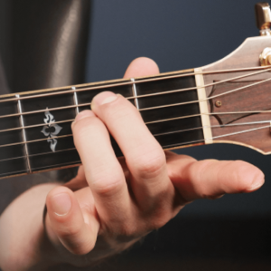
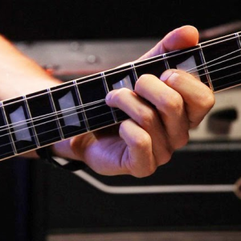
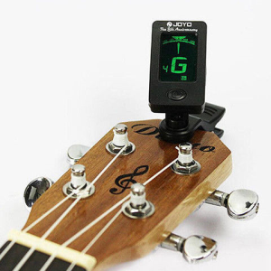

O guia definitivo para te ajudar na caminhada da música
-
Acordes
Acorde de Mi menor
-
Tecnicas
Slides, Hammer ons, Bends...
-
Afinação
Como afinar a sua guitarra
Lojas de Música próximas de VOCÊ!
O guia definitivo para te ajudar na caminhada da música
Acorde de Mi menor
Slides, Hammer ons, Bends...
Como afinar a sua guitarra
Lojas de Música próximas de VOCÊ!